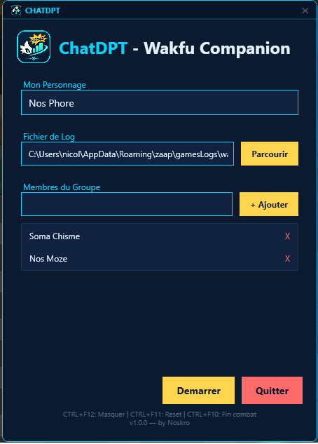
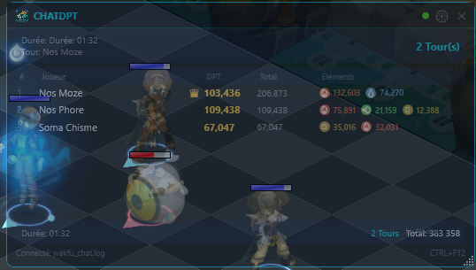
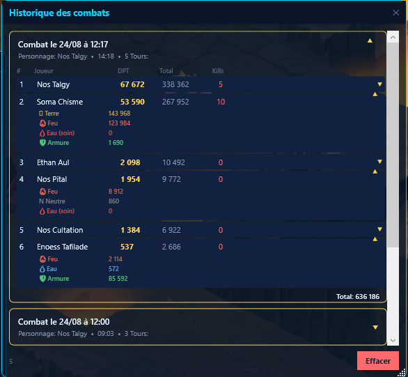

Overlay DPT en temps réel pour Wakfu. Analysez les performances de combat de votre groupe, tour par tour.
Real-time DPT overlay for Wakfu. Analyze your group's combat performance, turn by turn.
v1.0.0 — Windows 10/11 — .NET 8Tout ce dont vous avez besoin pour optimiser vos combats Wakfu.
Everything you need to optimize your Wakfu combats.
Calcul des dégâts par tour basé sur le combat au tour par tour de Wakfu. Les stats se mettent à jour instantanément.
Damage-per-turn calculation based on Wakfu's turn-based combat. Stats update instantly.
Fenêtre toujours visible au-dessus du jeu, sans intercepter les clics pendant les combats. Déplaçable et redimensionnable.
Always-on-top window over the game, click-through during combat. Draggable and resizable.
Suivez vos dégâts par élément (Feu, Eau, Terre, Air) pour optimiser votre build et votre stuff.
Track your damage by element (Fire, Water, Earth, Air) to optimize your build and gear.
Renseignez votre pseudo et ceux de votre groupe. Le fichier de log est détecté automatiquement.
Enter your character name and your group members. The log file is auto-detected.
Raccourcis clavier configurables pour masquer/afficher la fenêtre, empecher d'intercepter les clics ou non, terminer la capture d'un combat ou réinitialiser la capture. Contrôlez l'overlay sans quitter le jeu.
Configurable keyboard shortcuts to show/hide the window, toggle click-through, end combat capture or reset stats. Control the overlay without leaving the game.
Aucune modification des fichiers du jeu. Lecture seule des logs. Aucun risque de ban.
No game file modification. Read-only log parsing. Zero ban risk.



Trois étapes simples pour suivre votre DPT.
Three simple steps to start tracking your DPT.
Renseignez votre pseudo et ceux des membres de votre groupe dans la fenêtre de configuration.
Enter your character name and your group members in the configuration window.
ChatDPT détecte automatiquement le jeu et commence à lire les logs de combat.
ChatDPT auto-detects the game and starts reading combat logs.
L'overlay affiche les DPT de chaque joueur en temps réel. La couronne va au meilleur joueur.
The overlay shows each player's DPT in real time. The crown goes to the top performer.
Windows 10/11 · .NET 8 Runtime